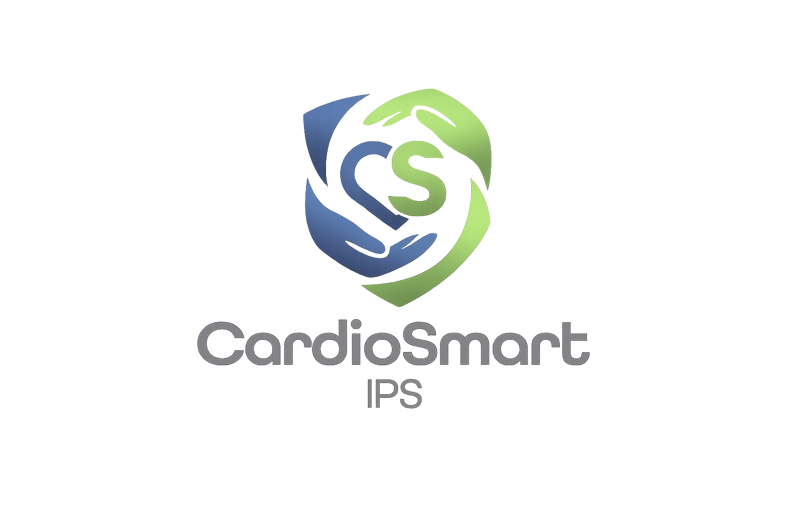

Cuidamos tu corazón,
Cuidamos tu corazón,
como si fuera el nuestro.
Ofrecemos atención especializada, humana e integral en cardiología orientada a la prevención, diagnóstico y tratamiento de las enfermedades cardiovasculares.